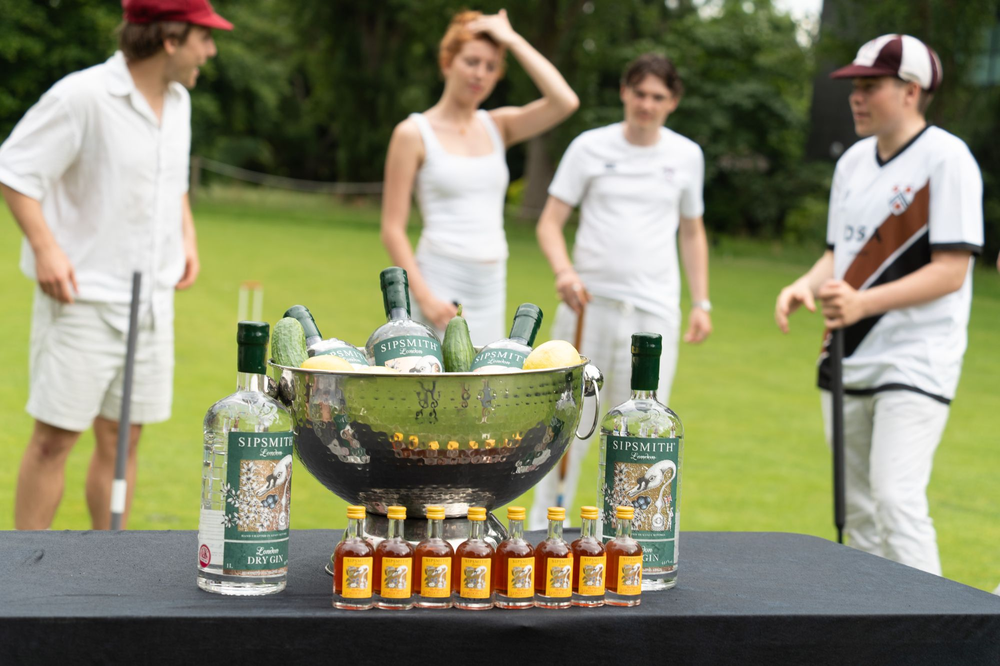

The Student Championships bring students together for singles and doubles competition. Entry, dates, accommodation and social arrangements vary by year, so check the current event information before making plans. See below for more information on accommodation. Watch this page for updates on the format of the two events, which will be given below. Please send expressions of interest for the 2023 Championship to croquet.club@studentclubs.ox.ac.uk.
THE 2023 STUDENT CROQUET CHAMPIONSHIPS
Sponsored by The Croquet Association.
| Venue: | Oxford University, the University Parks |
Event 1: The Student Open Championship
A Championship for individual players, to be played under the laws of level-advanced play. The format is likely to be a variant on a Swiss tournament, with the leading four players at lunchtime on Sunday being entered into a semi-final and final in the afternoon. The final will be seeded so that competitors from the same university will not meet in the first round if possible. The Dudley Hamilton Miller Cup. Holder: Aston Wade, Exeter University
Event 2: The Students' Doubles Championship
Teams of 2 players from the same institution playing level-advanced doubles. The format will depend on how many teams enter. The Edmund Reeve Cup. Holders: Felix O'Rahilly & Finn Sutcliffe, Cambridge University
Exceptions and Additions to General Conditions
- The Championships are being promoted by the Croquet Association. The format will depend on the number of entries. Regional heats will be organised prior to the final if required.
- To be eligible to compete, an entrant must be a student registered for and following a degree, diploma or apprenticeship at a Higher Education provider (listed on the gov.uk website gov.uk/check-a-university-is-officiallyrecognised/recognised-bodies) or international equivalent. A student finishing a course of study in December or March is eligible until the end of the academic year.
- The cost of bed and breakfast accommodation in Oxford is likely to be in the region of £60 per day. Players are responsible for making their own accommodation arrangements and accommodation lists can be requested with the entries. Limited rough accommodation is available with the Oxford team members - please contact the Secretary.
- Athletic Unions may support expenses for this championship - players should apply to their own unions to determine the level of support.